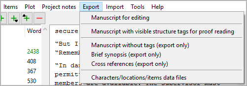

Export menu
File export

Manuscript for editing
This will write parts, chapters, and sections into a new OpenDocument
text document (odt) split into sections (to be seen in the Navigator).
File name suffix is _manuscript_tmp.
Only “normal” chapters and sections are exported. Chapters and sections marked “unused” are not exported.
Section titles are invisible, but appear in the Navigator.
Chapters and sections can neither be rearranged nor deleted.
With OpenOffice/LibreOffice Writer, you can split sections by inserting headings or a section divider:
Heading 1 → New part title. Optionally, you can add a description, separated by
|.Heading 2 → New chapter title. Optionally, you can add a description, separated by
|.###→ Section divider. Optionally, you can append the section title to the section divider. You can also add a description, separated by|.
Note
Documents with split sections are automatically discarded after the novelibre project is updated.
Text markup: Bold and italics are supported. Other highlighting such as underline and strikethrough are lost.
Manuscript for third-party word processing
Hint
This document retains its section information even if it is converted to other formats and back again. This may work with popular commercial word processors and even with web-based word processors such as Google Docs.
This will write parts, chapters, and sections into a new OpenDocument
text document (odt) with visible section markers. File name suffix is
_proof_tmp.
Only “normal” chapters and sections are exported. Chapters and sections marked “unused” are not exported.
The document contains chapter and section headings. However, changes will not be written back.
The document contains section
[scx]markers. Do not touch lines containing the markers if you want to be able to write the document back to novelibre format.Chapters and sections can neither be rearranged nor deleted.
When editing the document, you can split sections by inserting headings or a section divider:
Heading 1 → New part title. Optionally, you can add a description, separated by
|.Heading 2 → New chapter title. Optionally, you can add a description, separated by
|.###→ Section divider. Optionally, you can append the section title to the section divider. You can also add a description, separated by|.
Note
Documents with split sections are automatically discarded after the novelibre project is updated.
Text markup: Bold and italics are supported. Other highlighting such as underline and strikethrough are lost.
Manuscript for printing (export only)
Hint
In contrast to the manuscript for editing, this document is not divided internally into sections, which could facilitate further processing and reformatting.
This will write parts, chapters, and sections into a new OpenDocument text document (odt).
The document is placed in the same folder as the project.
Document’s filename:
<project name>.odt.Only “normal” chapters and sections are exported. Chapters and sections marked “unused” are not exported.
Part titles appear as first level heading.
Chapter titles appear as second level heading.
Sections are separated by
* * *. The first line is not indented.Starting from the second paragraph, paragraphs begin with indentation of the first line.
Sections marked “attach to previous section” appear like continuous paragraphs.
Text markup: Bold and italics are supported. Other highlighting such as underline and strikethrough are lost.
Brief synopsis (export only)
This will write a brief synopsis with part, chapter, and sections titles
into a new OpenDocument text document. File name suffix is
_brf_synopsis.
Only “normal” chapters and sections are exported. Chapters and sections marked “unused” are not exported.
Part titles appear as first level heading.
Chapter titles appear as second level heading.
Section titles appear as plain paragraphs.
Cross references (export only)
This will generate a new OpenDocument text document (odt) containing
navigable cross references. File name suffix is _xref. The cross
references are:
Sections per character,
sections per location,
sections per item,
sections per tag,
characters per tag,
locations per tag,
items per tag.
Characters/locations/items data files
This will create a set of XML files containing the project’s characters, locations, and items with all their properties. These files can be used to export the characters, locations, and items to another project (also with novelibre).
To import XML data files from another project, use the Import command in the Characters, Locations, or Items menu.
Plot description (export only)
This will write the plot-defining elements into a new OpenDocument text
document (odt). File name suffix is _plot.
The document contains:
First and second level stages (titles and descriptions).
Arcs (titles and descriptions).
Turning points (titles, descriptions, and links to the associated section, if any).
Plot spreadsheet (export only)
Export an ODS document
This will generate a new OpenDocument spreadsheet (ods) containing
sections, arcs, and turning points. File name suffix is _plotlist.
The spreadsheet is not meant to be written back to novelibre.
There are hyperlinks to the sections in the manuscript, and to the chapters in the plot description.
Show Plot list
Show sections, arcs, and turning points. This will generate a list-formatted HTML file, and launch your system’s web browser for displaying it.
The Report is a temporary file, auto-deleted on program exit.
If needed, you can have your web browser save or print it.